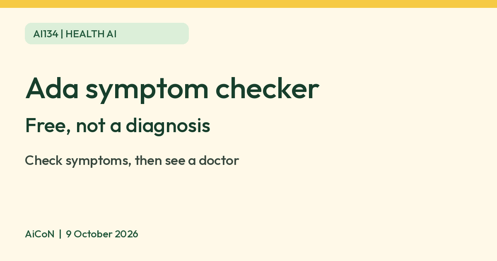

Ada symptom checker: a free way to organise your symptoms before seeing a doctor
Ada says its symptom checker uses AI to turn the symptoms you enter into a report of possible causes and next steps. Ada says it is free. Ada also says it is not a diagnosis and not a replacement for a doctor.

What it is
Ada is a symptom checker app and website. Ada says its assessment analyses the symptoms and health information you give, compares them with a database of conditions, and gives a report of likely explanations and how likely they are.
Is it free
Yes, according to Ada. Ada's terms say the website and Ada Assess are free of charge with unlimited assessments, and its help page says the assessment technology is free to anyone with a smartphone.
How to use it
- Open the Ada app and log in, or use the Ada website.
- Tap Start symptom assessment.
- Enter your symptoms and answer the follow-up questions.
- Read the report of possible causes and suggested next steps. You can use it to prepare for a conversation with a doctor.
Limits to know
- It is not a diagnosis. Ada's own help page says it is not intended to provide a medical diagnosis or replace advice from a healthcare professional, and cautions users not to base healthcare decisions on it.
- If symptoms are severe, sudden or getting worse, contact a doctor or emergency services instead of using an app.
- Ada lists these app languages: English, German, French, Spanish, Portuguese, Romanian and Swahili. No Indian language is listed.
- We did not verify how well it fits conditions common in India, and Ada's pages do not state India-specific availability.
- We did not test it ourselves.
Frequently asked questions
Can it replace a doctor visit?
No. Ada says it cannot.
Does it show ads?
Ada's help page says there are no ads in the app. It says it is funded by investment, partnerships with health systems, insurers and life science companies, and grants.
What about my data?
Ada says it does not sell your data and asks for consent for partner sharing. Its privacy help page also says third-party subcontractors may process personal data to provide the service under Ada's control and data-protection agreements. Read the privacy terms before entering health details.
Sources: Ada help, how to start a symptom assessment, Ada help, medical device and liability, Ada terms, Ada help, languages, Ada help, funding and ads, Ada help, third-party data sharing. Checked 9 October 2026.